- HOME
- 株式会社スマイル・ラボ
株式会社スマイル・ラボのご紹介Labo
歯科医療では、一般的に治療の最終段階に歯科補綴物を装着いたします。その補綴物を本当に信頼できる技術の高い人間に依頼することは、歯科医療を提供する医療法人宝歯会の責任です。また、その補綴物がどのように製作されているのかという透明性を高めることも、当法人の使命だと考えます。
そのため、当法人では歯科技工所「スマイル・ラボ」を設立し、信頼を置くことができる歯科技工士が製作した歯科補綴物のみを患者様に提供できる体制を整えています。福岡県、山口県、広島県、岡山県、兵庫県にある19の歯科医院が依頼した歯科補綴物は、すべてスマイル・ラボが責任を持って製作しています。
高い技術力を持ったエキスパートが、本物に近い「歯」を提供します
スマイル・ラボに在籍する歯科技工士は、精密な歯科補綴物をつくることができるプロフェッショナル集団です。医療人としてのプライドを持ち、製作した歯科補綴物が医療スタッフによって患者様に提供され、それによって患者様のQOLが保たれているという誇りを持ちながら、妥協のない仕事をしています。
ただ、患者様にとっては、治療の最終段階で装着する金冠や義歯などの補綴物は、誰がどのようにつくったのか非常に分かり辛いものです。だからこそ、スマイル・ラボでは、徹底して透明性を高める努力を行っています。患者様から「ありがとうございます」「綺麗ですね」といった感謝の言葉をいただけるよう、“全力”で歯科補綴物の製作に努めてまいります。
スマイル・ラボ製品一覧
-
HR（前装冠）
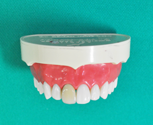
-
インレー
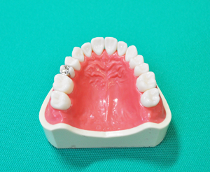
-
FMC
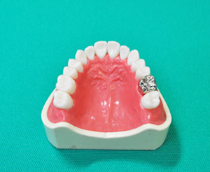
-
ブリッジ
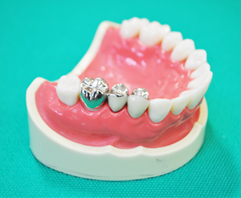
-
ハイブリッドセラミック冠
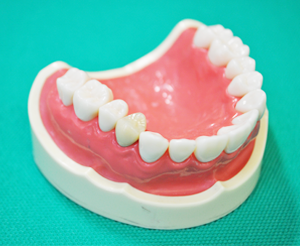
-
E-max（レイヤリング）
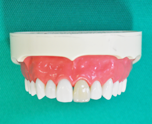
-
E-max（インレーステイニング）
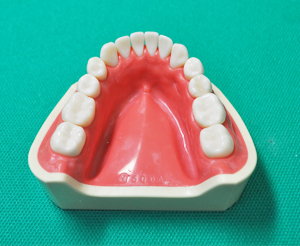
-
FD
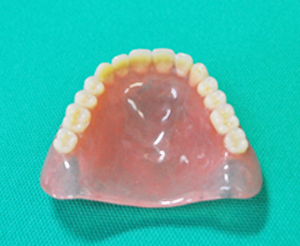
-
PD
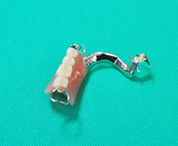
-
金属床
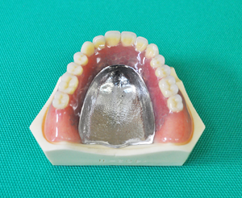
-
アタッチメント義歯各種
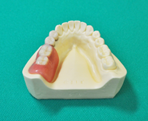
-
FKO
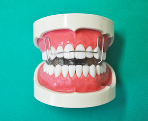
-
ラップアラウンドリテーナー
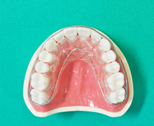
-
リンガルアーチ
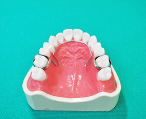
会社概要
| 会社名 | 株式会社スマイル・ラボ |
|---|---|
| 設立 | 2008年（平成20年）11月1日 |
| 所在地 | 〒808-0015 福岡県北九州市若松区上原町3-6 [交通手段] JR小倉駅より車で20分 戸畑駅より車で10分 |
| 従業員 | 6名（令和元年5月現在） |
| 事業概要 | 歯科技工物製作および販売 |